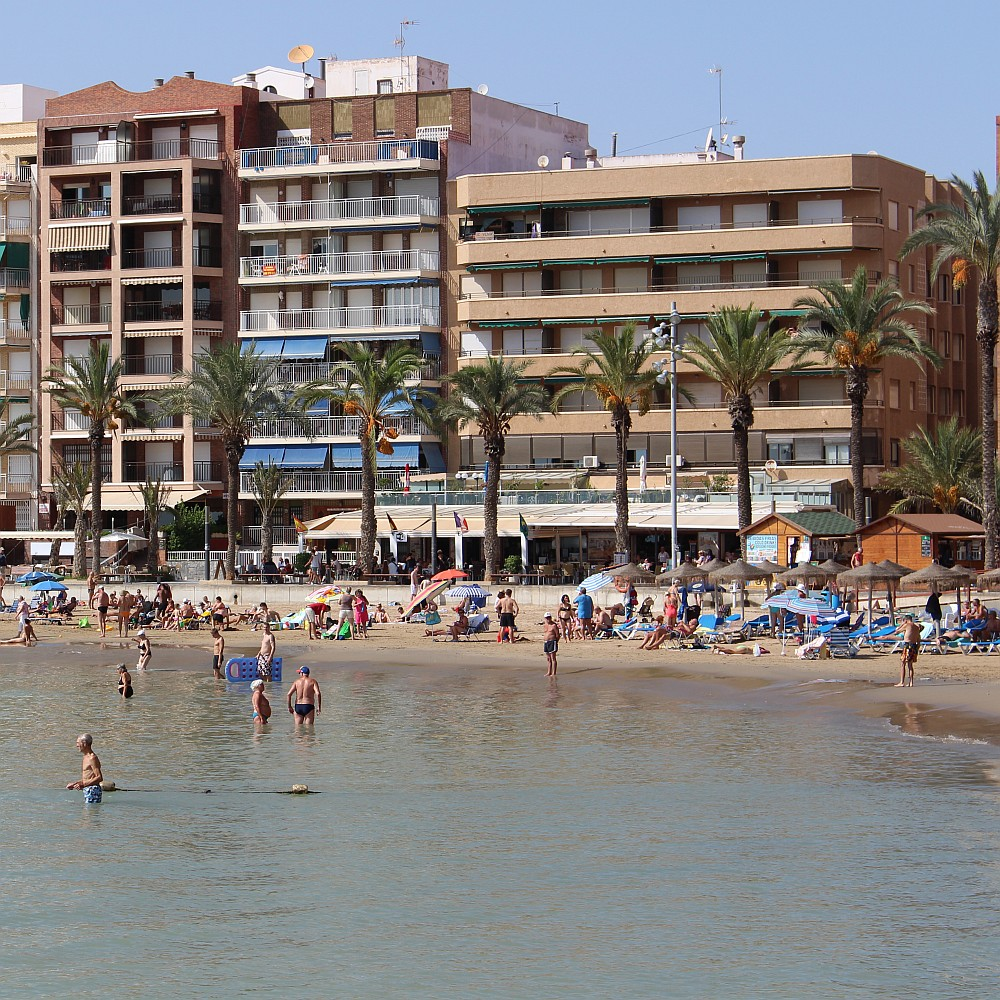
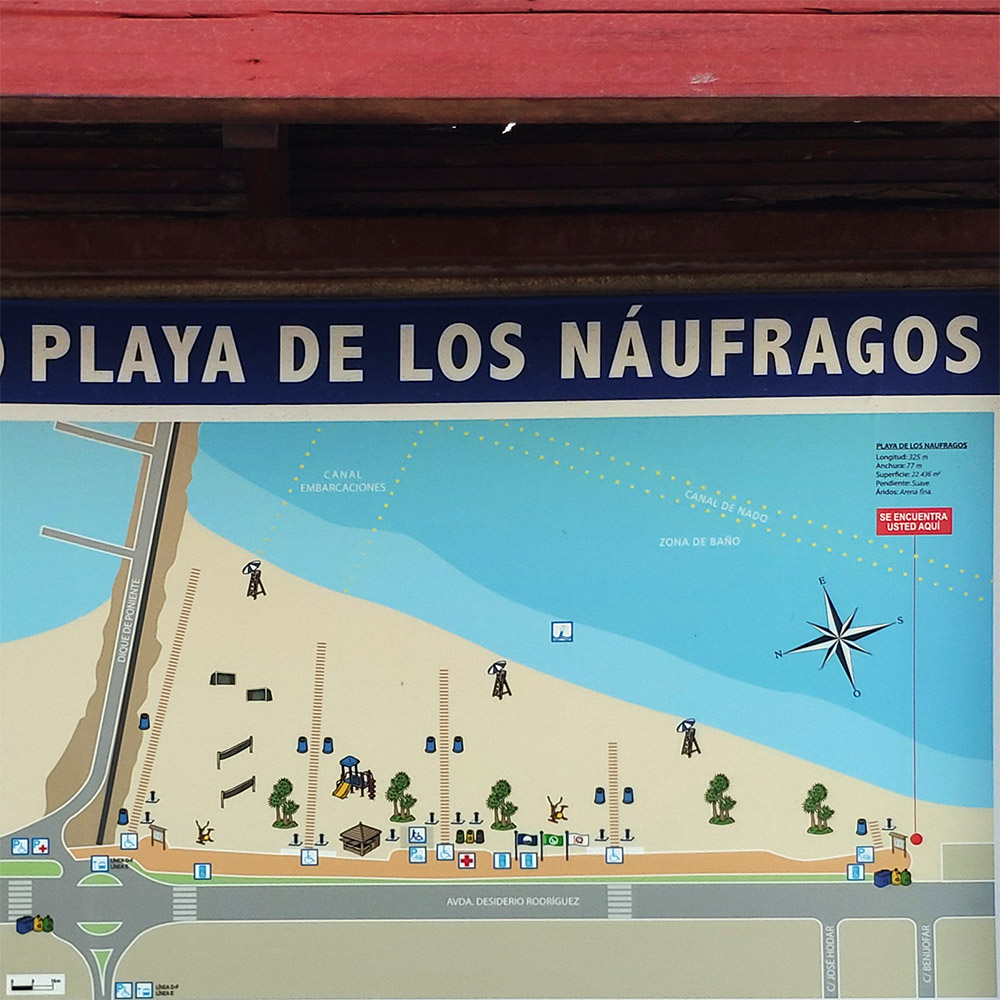
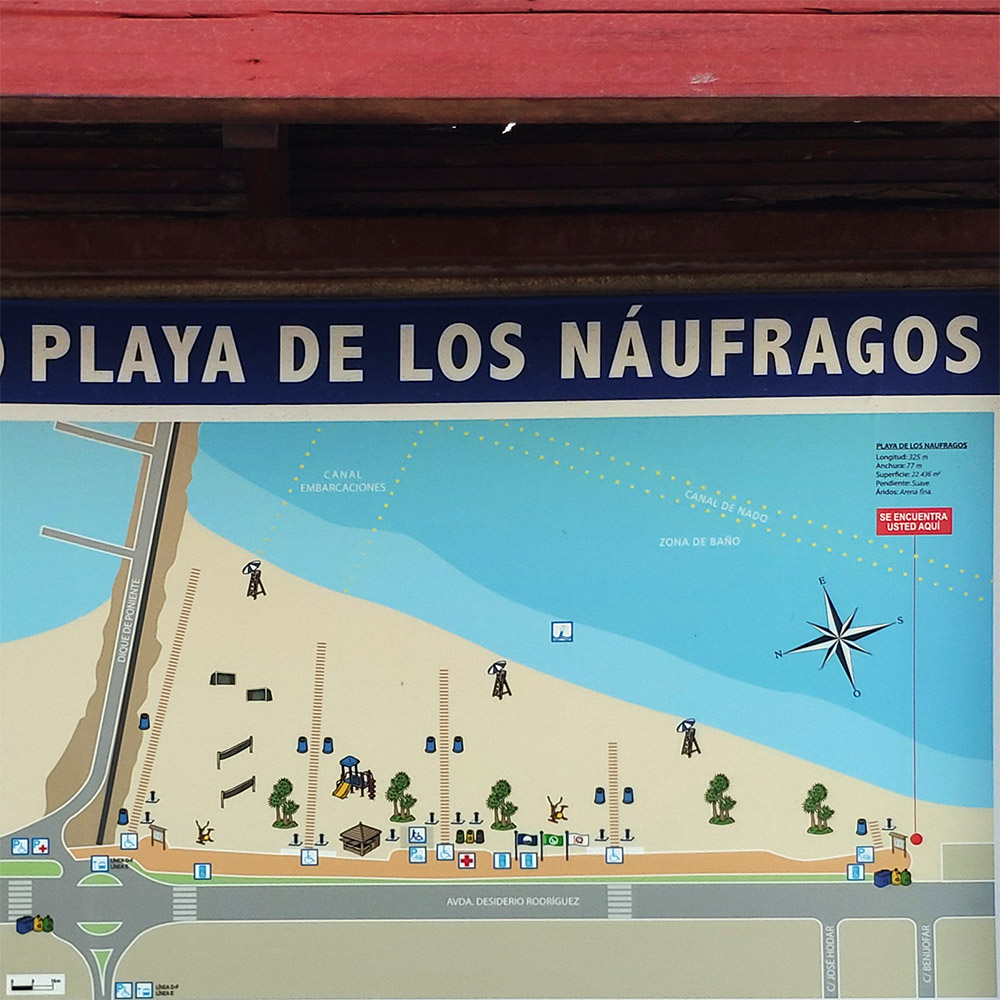
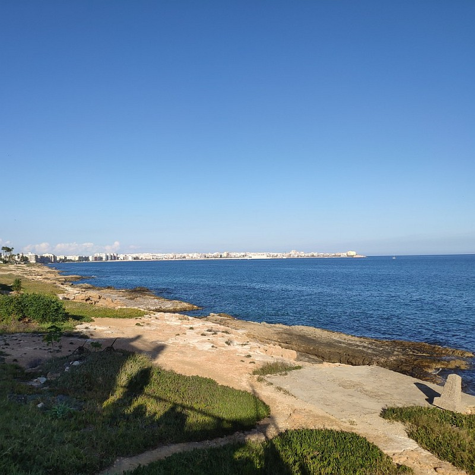
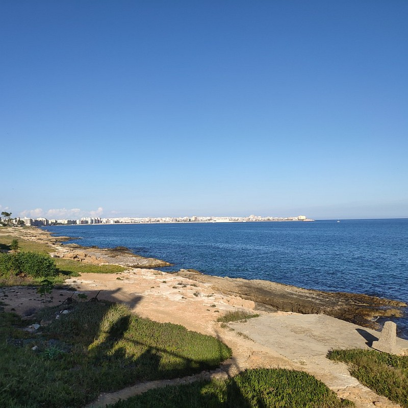

Playa de la Mata
Playa de la Mata es la mayor playa de Torrevieja, tiene 2363 m de largo y 47 m de ancho. Hay aquí 8 canchas de voleibol una cancha de futbol, pedalos, y en meses de verano una docena de chiringuitos.
Playa de la Mata es la mayor playa de Torrevieja, tiene 2363 m de largo y 47 m de ancho. Hay aquí 8 canchas de voleibol una cancha de futbol, pedalos, y en meses de verano una docena de chiringuitos.


Playa de los Locos
Playa de los Locos cuyo nombre recuerda un antiguo hospital cercano se encuentra en la costa al lado de la Playa del Cura, tiene 760 m de largo y 27 de ancho. Cerca hay muchos lugares de estacionamiento, restaurantes y bares. A veces está bastante llena.
Playa de los Locos cuyo nombre recuerda un antiguo hospital cercano se encuentra en la costa al lado de la Playa del Cura, tiene 760 m de largo y 27 de ancho. Cerca hay muchos lugares de estacionamiento, restaurantes y bares. A veces está bastante llena.


Playa del Cura
Playa del Cura tiene fama de ser la mejor en la ciudad. Es más pequeña que la Playa de los Locos (375 m de largo y 27 m de ancho). También a veces está bastante llena.
Playa del Cura tiene fama de ser la mejor en la ciudad. Es más pequeña que la Playa de los Locos (375 m de largo y 27 m de ancho). También a veces está bastante llena.


Playa del Acequion
De hecho la Playa del Acequion es una continuación de la Playa de los Náufragos del lado nor-este del muelle de sal dentro del puerto.
De hecho la Playa del Acequion es una continuación de la Playa de los Náufragos del lado nor-este del muelle de sal dentro del puerto.


Playa de los Náufragos
La playa al lado del puerto y del centro de deportes acuáticos es arenosa y muy popular. Está ubicada muy cerca a la ciudad con acceso fácil al centro de Torrevieja, lo que desafortunadamente la convierte en muy llena. Es una playa larga y ancha de 325 de largo m y 77 m de ancho. Está marcada con la Bandera Azul. Gracias a unas palmeras dentro da la arena ofrece también un poco de sombra. Tiene un pequeño parque acuático para niños.
La playa al lado del puerto y del centro de deportes acuáticos es arenosa y muy popular. Está ubicada muy cerca a la ciudad con acceso fácil al centro de Torrevieja, lo que desafortunadamente la convierte en muy llena. Es una playa larga y ancha de 325 de largo m y 77 m de ancho. Está marcada con la Bandera Azul. Gracias a unas palmeras dentro da la arena ofrece también un poco de sombra. Tiene un pequeño parque acuático para niños.
 

Desde la Playaa de los Náufragos hasta la Cala Piteras
Uno puede ir de paseo cerca de 2 km por la costa misma del mar. Hay partes con arena, otras con grava, o con piedras, y también unas cubiertas de hierba. Cerca de la salida a la playa desde el apartameto hay una escalerita cómoda para bajar al mar. Hay aquí lugares excelentes para bucear y observar las peces. Al lado en el cesped uno puede gozar del sol en camas solares.
Uno puede ir de paseo cerca de 2 km por la costa misma del mar. Hay partes con arena, otras con grava, o con piedras, y también unas cubiertas de hierba. Cerca de la salida a la playa desde el apartameto hay una escalerita cómoda para bajar al mar. Hay aquí lugares excelentes para bucear y observar las peces. Al lado en el cesped uno puede gozar del sol en camas solares.
 

Playa Cala Ferris
En el extremo sur de Torrevieja se encuentra una playa poco conocida, pequeña y bella, con palmeras, pequeñas dunas y agua cristalina. En la mañana y en la tarde podrás escuchar los gritos de los de loros. Es una playa ideal para nadar o bucear con un esnórquel. En el agua tan limpia se ven diversas especies de peces.
En el extremo sur de Torrevieja se encuentra una playa poco conocida, pequeña y bella, con palmeras, pequeñas dunas y agua cristalina. En la mañana y en la tarde podrás escuchar los gritos de los de loros. Es una playa ideal para nadar o bucear con un esnórquel. En el agua tan limpia se ven diversas especies de peces.

Cala Piteras
Con 123 m de largo y 15 m de ancho no es una playa muy grande, que es excelente para nadar y bucear con un esnórquel. Se encuentra aquí una de las más impresionantes praderas de Posidonia oceanica, una planta acuática, endémica del Mediterráneo, parte importante del ecosistema. Crece bien solamente en agua limpia. Si la veas, sabrás que nadas en una de las mejores partes del Mar Mediterráneo.
Con 123 m de largo y 15 m de ancho no es una playa muy grande, que es excelente para nadar y bucear con un esnórquel. Se encuentra aquí una de las más impresionantes praderas de Posidonia oceanica, una planta acuática, endémica del Mediterráneo, parte importante del ecosistema. Crece bien solamente en agua limpia. Si la veas, sabrás que nadas en una de las mejores partes del Mar Mediterráneo.